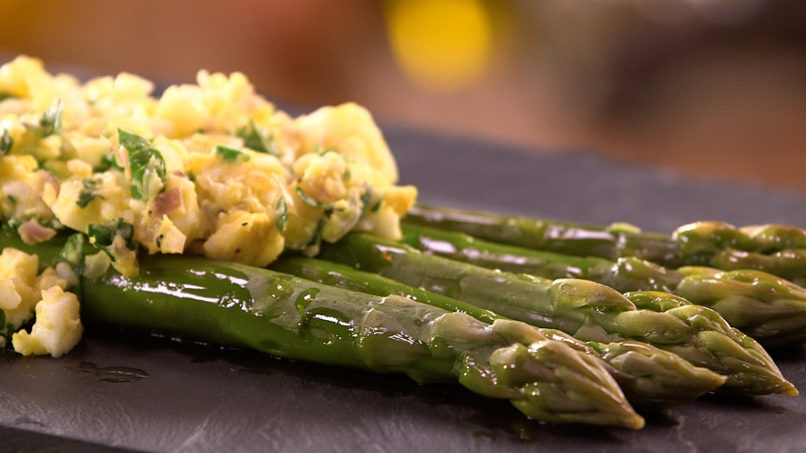

Recette d'asperges à la Flamande

Informations pratiques |
Ingrédients |
- Temps : 40 minutes
- Nombre de personnes : 2
- Niveau de difficulté : Facile
- Coût moyen : €€
|
- 16 asperges vertes (ou une botte)
- 3 oeufs
- 50 grammes de beurre
- 50 grammes d'huile d'olive
- Persil hâché
- 1 Oignon jeune ou 1 échalotte
- Sel et poivre
|
Préparation
-
Laver les asperges et couper les bouts durs (vous pouvez garder
ceux-ci pour faire un potage)
-
Plonger les asperges vertes dans l'eau bouillante et les cuire
pendant 8 à 10 minutes si vous les souhaitez al dente. Laissez-les
15 minutes, si vous les désirez plus fondantes. Vous pouvez les
piquer avec un couteau pour vérifier la cuisson.
-
Pendant ce temps, cuire les oeufs pendant 10 minutes afin qu'ils
soient durs.
-
Hâchez le persil, coupez l'oignon jeune (ou la ciboulette) et faites
fondre le beurre à feux doux (ou dans un bol au micro-ondes).
-
Ecrasez les oeufs durs à la fourchette. Mélangez le beurre fondu
avec le persil et l'oignon et assaisonnez le mélange.
-
Placez les asperges sur une assiette et disposez par dessus votre
préparation d'oeufs durs assaisonnés.